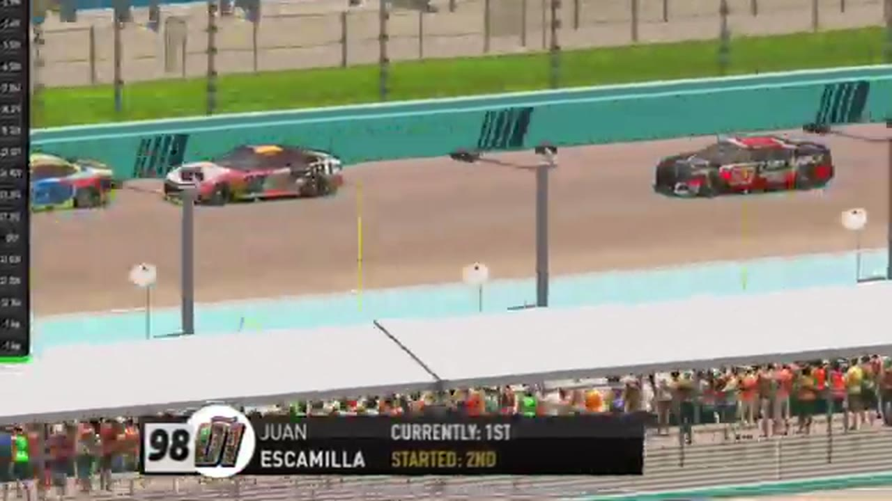

Race 2 at Homestead-Miami
Juan Escamilla and Bryce Hinton split the stages before Ethan Moreno turned his Highline debut into a feature win.

- Date
- November 24, 2025
- Track
- Homestead-Miami
- Race tape
- 1h 51m
- Exact chapters
- 18
Ethan Moreno reaches the record
The Homestead broadcast's closing readout and interviews record Ethan Moreno first, Francisco Bacayo second, and Juan Escamilla third.
TAPE-SUPPORTED. Only explicitly supported positions are published; a nearby running order is never promoted into a finish.18 ways back into the race
Every link opens the complete broadcast at the reviewed timestamp. Chapter summaries are navigation claims unless explicitly marked as result-supported.
-
QUALIFYING · OPENINGOPEN EXACT CUT
Francisco Bacayo and Juan Escamilla lead the Homestead grid
After the anthem, HLRN rolls through the current Homestead grid with Francisco Bacayo on pole and Juan Escamilla, Nick Bowman, Ethan Moreno, Craig Rowe, and Matt Brown among the front starters.
-
RESTART · OPENINGOPEN EXACT CUT
The Homestead field takes the opening green
Francisco Bacayo launches the actual Race 2 field with Juan Escamilla and Nick Bowman alongside. This replaces the embedded Daytona recap that the original extractor mistook for Homestead's opening green.
-
INCIDENT · OPENINGOPEN EXACT CUT
Homestead's first lap immediately tests the field
Cars get loose high and low on the opening lap before Thomas Gratton reaches pit road and pole sitter Francisco Bacayo brushes the wall. HLRN explains that the event will stay green until its scheduled lap-25 caution.
-
STAGE · OPENINGOPEN EXACT CUT
HLRN explains Homestead's scheduled stage format
Four laps into the race, the booth explains that the field will stay green through incidental spins, reset at lap 25, and run to the lap-50 Stage 2 checkpoint. This is a format receipt, not a stage-winner or points claim.
-
BATTLE · MIDDLEOPEN EXACT CUT
Homestead-Miami runs side by side at the front
S1 / R2 at 44:52: The Homestead-Miami pack compresses side by side while Bryce Hinton and Jim Sagredo are named on the call. The chapter keeps the live battle intact and makes no finishing-order claim.
-
STAGE · MIDDLEOPEN EXACT CUT
Stage 1 winner call at Homestead-Miami
S1 / R2 at 45:56: The broadcast enters a stage-scoring discussion at Homestead-Miami with Juan Escamilla and Bryce Hinton in the scoring call. The clip preserves the on-air timing or points call without promoting it into a complete stage result; the accepted feature result ledger remains separate.
-
STRATEGY · MIDDLEOPEN EXACT CUT
Bryce Hinton enters the Homestead-Miami pit-strategy swing
S1 / R2 at 59:19: Pit timing starts to reorganize the field, with Bryce Hinton, Evan Perry, Trevor Haley, and Nick Bowman named in the sequence. The clip is a strategy receipt from the primary Homestead-Miami broadcast, not a reconstructed scoring sheet.
-
STRATEGY · MIDDLEOPEN EXACT CUT
Tire choices redraw the Homestead-Miami order
S1 / R2 at 1:02:09: Tire choices redraw the running order, with Bryce Hinton named in the sequence. The clip is a strategy receipt from the primary Homestead-Miami broadcast, not a reconstructed scoring sheet.
-
INCIDENT · MIDDLEOPEN EXACT CUT
Evan Perry's crash precedes Homestead's scheduled caution
With the competition caution expected in a few laps, HLRN reports that Evan Perry has crashed. The field stays live until the scheduled reset, so this card does not claim that Perry immediately triggered the yellow.
-
BATTLE · MIDDLEOPEN EXACT CUT
Craig Rowe fights toward Homestead's top ten
HLRN checks Craig Rowe in twentieth and follows his attempt to recover toward the top ten. The scheduled caution arrives moments later; this window contains no Craig Rowe pit stop.
-
RESTART · MIDDLEOPEN EXACT CUT
Homestead's scheduled caution sets up a ten-lap sprint
The competition caution arrives with roughly ten laps remaining. HLRN begins rebuilding the order and checking the drivers who will restart near the front.
-
BATTLE · MIDDLEOPEN EXACT CUT
Three lanes form in the Homestead-Miami lead pack
S1 / R2 at 1:19:40: The Homestead-Miami pack compresses in a front-pack fight. The chapter keeps the live battle intact and makes no finishing-order claim.
-
RESTART · CLOSINGOPEN EXACT CUT
Nick Bowman brings Homestead-Miami back to green
S1 / R2 at 1:21:21: Nick Bowman is in the booth's front-pack call as Homestead-Miami returns to green. The cut keeps the restart launch and the first lap of lane development together.
-
RESTART · CLOSINGOPEN EXACT CUT
Ethan Moreno controls Homestead's four-lap caution order
With four laps scheduled to remain, the caution freezes Ethan Moreno ahead of Juan Escamilla, Francisco Bacayo, and Dwayne Fertick. The booth reads the running order rather than reviewing an incident involving those leaders.
-
FINISH · CLOSINGOPEN EXACT CUT
Ethan Moreno and Juan Escamilla enter the final-lap decision
S1 / R2 at 1:31:05: The white flag opens the final-lap decision at Homestead-Miami, with Ethan Moreno and Juan Escamilla named in the decisive group. The cut continues through the immediate finish call on the full primary broadcast.
-
POSTRACE · CLOSINGOPEN EXACT CUT
Nick Bowman and Fred Pennington return in the Homestead-Miami post-race contact review
S1 / R2 at 1:33:13: The reviewed live-race close has passed before this Homestead-Miami incident booth review begins with Nick Bowman, Fred Pennington, Timothy Tyler, and Jim Sagredo named in the discussion. It remains post-race context, not a new incident, stage, strategy call, finish, or result receipt.
-
INTERVIEW · CLOSINGOPEN EXACT CUT
Nick Bowman explains the race from the booth
S1 / R2 at 1:35:13: Nick Bowman joins the HLRN booth for a first-person race account. The interview is preserved as context and does not create a placement claim outside the accepted result ledger.
-
RESULT · CLOSINGOPEN EXACT CUT
Ethan Moreno is confirmed atop the Homestead-Miami results
The Homestead broadcast's closing readout and interviews record Ethan Moreno first, Francisco Bacayo second, and Juan Escamilla third.
All 20 official winners are backed by position-specific calls in a primary broadcast or an HLRN-authored companion episode. Complete finishing orders, points, and starts remain open until owner records are supplied.